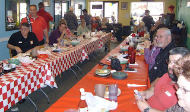
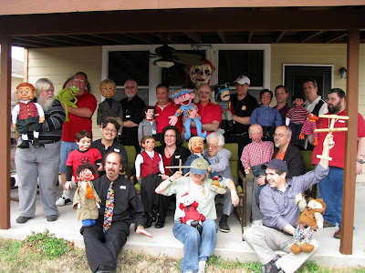

Texas Vent Gathering
2/28/2011
Twenty three people attended the Feb. 19th ventriloquist/puppeteer gathering in Manor (Austin) Texas. The event was hosted by Bob and June Abdou. Three attendees came from out of state. Several of the attendees had a common connection, being graduates of the *Maher Course and/or being owners of a Maher/Detweiler figure.
.
The fun-filled day began with lunch together in the private room of a local restaurant. After a period of getting acquainted and while food orders were taken and served, a small open mic, show and tell took place with Lori Bruner, David Pitts, Clayton Delong, David Carranza, and Randy Gentry participating.
After two hours at the restaurant, the group went to Bob and June's house for a tour of Bob's amazing collection of figures, puppets, and vintage toys. Dessert followed.
The guest of honor for the day was Peter Rich. (To be continued tomorrow.)
* * * * *
Contributing to this post: Charles Prouty and Thomas Rogers
(*The Maher Home Course is available for purchase Here. )
.
{kind=link}

The fun-filled day began with lunch together in the private room of a local restaurant. After a period of getting acquainted and while food orders were taken and served, a small open mic, show and tell took place with Lori Bruner, David Pitts, Clayton Delong, David Carranza, and Randy Gentry participating.
After two hours at the restaurant, the group went to Bob and June's house for a tour of Bob's amazing collection of figures, puppets, and vintage toys. Dessert followed.
The guest of honor for the day was Peter Rich. (To be continued tomorrow.)
* * * * *
Contributing to this post: Charles Prouty and Thomas Rogers
(*The Maher Home Course is available for purchase Here. )
